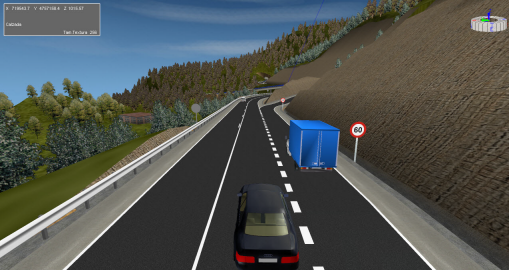
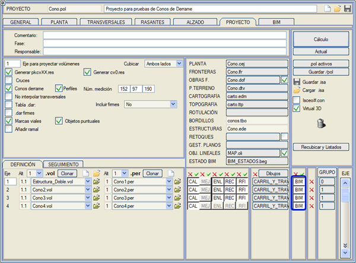

| |
|
SANAL 3B: Giriş
|
|
Genel Bilgiler Bir arazinin, bir doğrusal projenin veya manzarayı değiştiren herhangi bir türde sivil altyapının sunumu, 'kuş bakışı' görüleceği gibi üç boyutlu olarak izlenebildiğinde çok daha anlaşılır olur. SANAL 3B modülü, ISTRAM®BIM'in herhangi bir modülü ile oluşturulan herhangi bir geometrinin sanal olarak temsil edilmesini sağlayan modüldür. Özellikle, en güçlü işlevler doğrusal projelerle (karayolları, otoyollar, demiryolları ve boru hatları) çalışmak için yapılmıştır. Bu bağlamda, 3B geometri oluşturulmasını otomatikleştiren, kullanıcıya neredeyse anında projesiyle sonuçlar elde etmeye hazır bir sahne sunan işlevler geliştirilmiştir. 
SANAL 3B tarafından sunulan sistemin diğer modelleme programlarına göre avantajı, bu programların bilgiyi her zaman kendi ortamlarına aktarma ihtiyacı duyması ve böylece tanım verileriyle bağlantıyı kaybetmesidir. Kullanıcı bir karayolunu hesaplayabilir, 3B ortamda görünümünü görselleştirebilir, kritik bir kurbun yarıçapını değiştirebilir ve sonucu anında görebilir. Sahne düzenlendikten sonra, kullanıcı temsil edilen sanal dünyanın anlık bir görüntüsünü almak için bir kamera konumlandırır. Ayrıca animasyonlar yapmak ve olası aktörlerin (araçlar, iş makineleri vb.) farklı 'roller' üstlendiği farklı sahneleri yeniden üretecek bir video dizisi oluşturmak da mümkündür; ve tüm bunlar çoklu ışık, sis vb. efektler ekleme imkanıyla birlikte. Özellikler ISTRAM®BIM'den 3B Gösterimle Bilgi Alır

Sahne Elemanlarının Otomatik Donatımı
Malzeme Yönetimi
Görünüm Oluşturma
Dekoratif Geometri Ekleme Arazi ve proje dışında, sahneye birden çok kaynaktan dekoratif geometriler eklenebilir:
Animasyon Oluşturma Sahnedeki "aktörleri" temsil eden rollerin tanımlanması için bir sistem sağlanmıştır. Aktörler herhangi bir geometri, kamera veya ışık olabilir ve sahnede, kullanıcının güzergahın başlangıç noktasını, hızını ve süresini yapılandırdığı kılavuz çizgileri takip ederek hareket edebilirler. Ayrıca kendi etraflarında dönebilir ve animasyon süresi boyunca şeffaflıklarını değiştirebilirler. Animasyonlar 3B görselleştirmede gösterilebilir veya AVI formatında video olarak kaydedilebilir. Sistem Gereksinimleri ISTRAM®/ISPOL® Gereksinimleri SANAL 3B'nin bağımsız bir uygulama olmadığını ve harita yükleme, diğer uygulamalardan dosya içe aktarma, sayısal arazi modelleri oluşturma vb. işlemlerin mümkün olduğu SAYISAL HARİTACILIK modülüne ihtiyaç duyduğunu belirtmek çok önemlidir. Bir doğrusal projenin geometrisi, DOĞRUSAL PROJE modülü olmadan oluşturulamaz; ancak bu modüle sahip bir lisansla oluşturulup, SAYISAL HARİTACILIK ve SANAL 3B modüllerine sahip başka bir lisansla kullanılabilir. Bu durumda, proje geometrisi onu oluşturan projeyle bağlantısını kaybeder, ki bu durum, söz konusu proje değiştirilmeyecekse bir sorun teşkil etmeyebilir. SANAL 3B ile çalışırken ve DOĞRUSAL PROJE modülünden başlatıldığında, eksenlerle ilgili daha fazla bilgiye sahip olunabilir ve projedeki değişiklikler 3B geometriye hızla yansıtılabilir. Donanım ve Yazılım Gereksinimleri SANAL 3B, esas olarak DOĞRUSAL PROJE projeleri olmak üzere, geometrinin 3B görselleştirme uygulamasıdır. Bu nedenle, büyük miktarda geometrik bilgiyi ve dokuları hızla işleyebilen bir bilgisayar gerektirir. Her durumda, ISTRAM®BIM'in çalıştırılabileceği bir bilgisayar gereklidir (bkz. program gereksinimleri). En kritik unsurlar işlemci, bellek ve grafik kartıdır, ancak bazı durumlarda disklerin hızı ve kapasitesi de önemli olabilir. Günümüz işlemcileri bu tür uygulamalar ve verilerle gerçek zamanlı olarak oldukça iyi çalışır, ancak çok sayıda kare veya çok sayıda hareketli nesne içeren videolar üretmek için güçlü işlemciler kullanmak daha iyidir. Intel'in i5 veya i7 veya daha üstü (veya benzer performansa sahip başka bir markanın) işlemcileri en çok tavsiye edilenlerdir. Bellek, çalışılan tüm verileri barındırmak için yeterli olmalıdır, çünkü diske çok sık başvurulması gerekirse sistem çok yavaşlayabilir. Her durumda 2 gigabayttan az tavsiye edilmez. Grafik kartı OpenGL 2.1 veya üstünü desteklemeli ve en az 256 megabayt belleğe sahip olmalıdır. Daha güçlü kartlar çok daha iyi performans verir. Ekran, en az 1280x1024 piksel veya 1366x760 piksel çözünürlük sunmalıdır; 1920x1080 piksel veya üstü tavsiye edilir. Bu, bilgisayarın çalışma hızıyla değil, ekranda görünen her şeyi görmeye olanak tanıyan kullanılabilirlikle ilgilidir. Bilgisayarın sabit diski, ihtiyaç duyulan verileri barındırmak için yeterli alana sahip olmalı, aynı zamanda sonuçları da depolayabilmelidir. Oluşturulan videolar, kullanılan codec'e, oluşturulan kare sayısına ve kare boyutuna bağlı olarak diskte genellikle çok yer kaplar. Ve özel düzenleme işleri için kareler ayrı ayrı saklanırsa çok daha fazla yer kaplar. Fare, en az 3 tuşa sahip olmalı ve ortadaki tuş bir tekerlek olmalıdır. Bu çoğu durumda böyledir, ancak değilse 3B görselleştirme penceresinde işlevsellik kaybı yaşanır. ISTRAM®BIM Kütüphaneleri SANAL 3B, ISTRAM®BIM'in bir parçası olarak, çeşitli klasörlerde yapılandırma dosyalarına sahiptir: programın kurulum klasörünün LIB alt klasöründe ve yine kurulum klasöründe bulunması gereken LIBSOL klasöründe. Bu LIBSOL klasörü, SANAL 3B ile çalışmak için temel olan nesne, malzeme, billboard ve arka plan kütüphanelerini içerir. Onsuz çalışılabilse de, iyi sonuçlar elde etmek için gereklidir. Boyutu nedeniyle, ISTRAM®BIM'in normal kurulumundan ayrı olarak kopyalanmalıdır. Web sitemizin indirme ve kaynaklar alanında veya Sanal 3B menüsünün kendisinden, Nesne ve Malzeme Kütüphanesini İndir seçeneği aracılığıyla mevcuttur. |